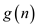
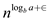

The equation of the recursive division of the recursion tree when b is a positive number, which represents the size of the sub problem, is each of a number of sub problems.
At every upcoming step, each of a divided problem divides themselves by size.
Therefore, the equation for finding the  element in
a sequence of n numbers where b’s value is only
restricted to any positive value is as:
element in
a sequence of n numbers where b’s value is only
restricted to any positive value is as:
 …… (1)
…… (1)
In equation (1) put the value of j
For
For
…… (2)
Put the value of  in equation
(2)
in equation
(2)
So,
For
…… (3)
Put the value of in equation (3)
So,
Similarly calculate the value of
The general equation for equation (1) is as follows:
…… (4)
In general equation (4) put the integer value of j to find the value of similar to the value of equation (1), (2), (3) and so on.
Consider the following equation.

From equation (4.22) given in lemma 4.3 in the text book, a function  is defined over exact powers of b by,
Substitute in equation (1).
Then,
Substitute the value of from equation (3) in equation (2).
Then,
Consider as A in equation (4).
Then,
Consider as B in equation (6).
Then,
Consider as d in .
Then,
Substitute equation (7) in equation (5).
Then,
Substitute equation (9) in equation (10).
Then,
Hence, proved that if, then the master recurrence has solution .
There are certain conditions for implementing the Master’s theorem, that is, has to be a monotonically increasing function; and must be a polynomial function.
Now from the above recurrence relation, we can find the mathematical relation as:
… … (2)
Taking in equation (2)
… … (3)
Dividing equation (3) by
.
.
.
… … (4)
By adding the equations (2) through (4), we get the following result.
… … (5)There are 3 cases of the master’s theorem for equation (5).
1.
2.
3.
For case 3 of the proof of the master theorem is as follows:
If
Therefore
Thus in general if where and the condition is
For somethen,
In the third case, thein the
recurrence relation is actually compared to an; if
is
greater than  by a factor
of log, this condition has to be there, else the function
might be equal to the growth of.
by a factor
of log, this condition has to be there, else the function
might be equal to the growth of.
So the condition of must be there.
Thus, the statement of case 3 of the masters theorem is overstated to have the regularity of to be there for then the.